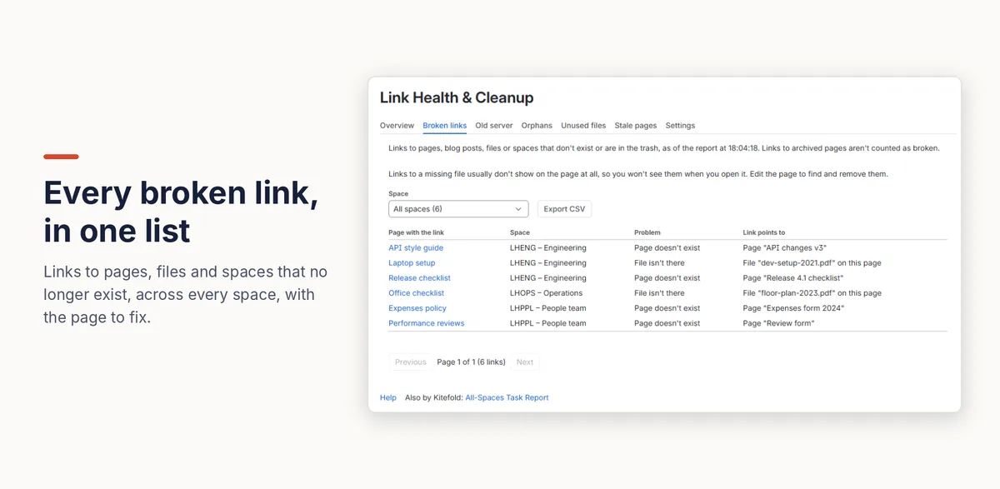

How to find broken links in Confluence Cloud
Confluence Cloud lists links to pages that don't exist, but only one space at a time, and it doesn't cover links to missing files, spaces or old web addresses. On the page itself a broken link looks like any other link. To list every broken link in every space, with the page it's on and what it points to, use an app that keeps an index of your links.
With Confluence on its own
What breaks a link
Confluence updates links between pages when a page is renamed or moved, so most links survive. A link breaks when what it points to is deleted or moved to the trash, when a whole space goes, or when the link is a full web address that no longer works, such as an address on your old Confluence server.
The space's list of links to missing pages
- Open the space and go to Space settings → Content → Undefined.
- Each row names the missing page and the page that links to it (Linked From).
- Open each linking page, then fix or remove the link in the editor and publish.
What a broken link looks like
A link to a page that doesn’t exist looks exactly like a working link: same colour, no warning. Selecting it doesn’t say “page not found”; it starts creating a new page with that title. Links to files that are no longer there often don't show at all when you view the page; you only see them in the editor.
Where it falls short
- One space at a time. There's no list across the whole site, so on a site with many spaces you'd open each one.
- Pages only. Links to missing files, to deleted spaces, and full web addresses that no longer work (such as your old Confluence server) aren't listed.
- Easy to miss. Broken links look like working ones, and broken file links don't appear at all, so readers rarely report them.
Check one page for free: paste a page into our free Confluence link checker to list its links to missing pages, your old server, other Confluence sites and internal-only addresses. It runs in your browser; nothing you paste is sent anywhere.
Every broken link at once with Link Health & Cleanup
- A Confluence admin installs Link Health & Cleanup. It builds an index of every link on the site, usually within a few minutes.
- Open Settings (the cog) → Link Health & Cleanup → Broken links.
- Each row shows the page with the link, its space, the problem (for example “Page doesn't exist” or “File isn't there”) and what the link points to. Filter by space, or export the list as CSV to share the work out.
Links to archived pages aren't counted as broken. The list only includes pages you're allowed to open, and it updates within minutes of a page being edited.

Disclosure: Kitefold makes Link Health & Cleanup, so we're not neutral. The built-in options above are free and may be all you need.
Related guides
- Free Confluence link checker (paste a page)
- How to see which pages link to a Confluence page
- Fixing old links after moving Confluence from Data Center to Cloud
- How to find orphan pages in Confluence
- Confluence clean-up searches with CQL, and what CQL can’t find
Checked against Confluence Cloud in November 2026. Confluence changes often; if something here no longer matches what you see, email support@kitefold.app and we'll update it.